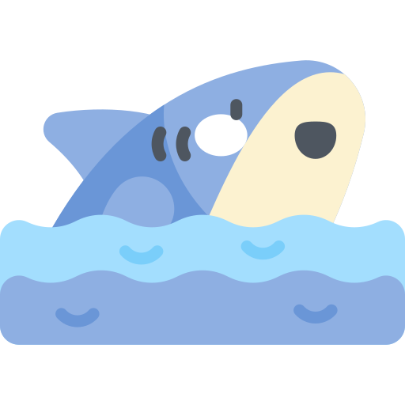
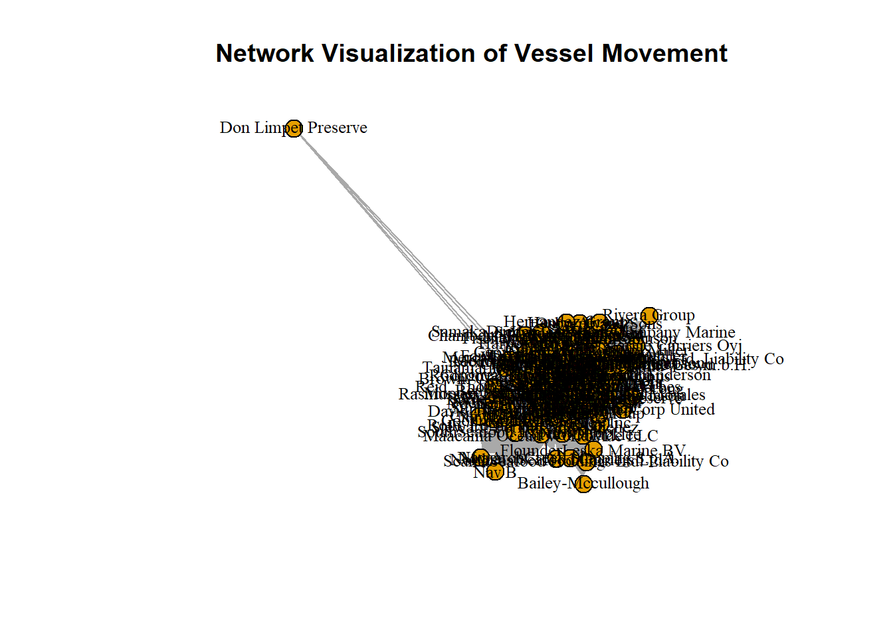
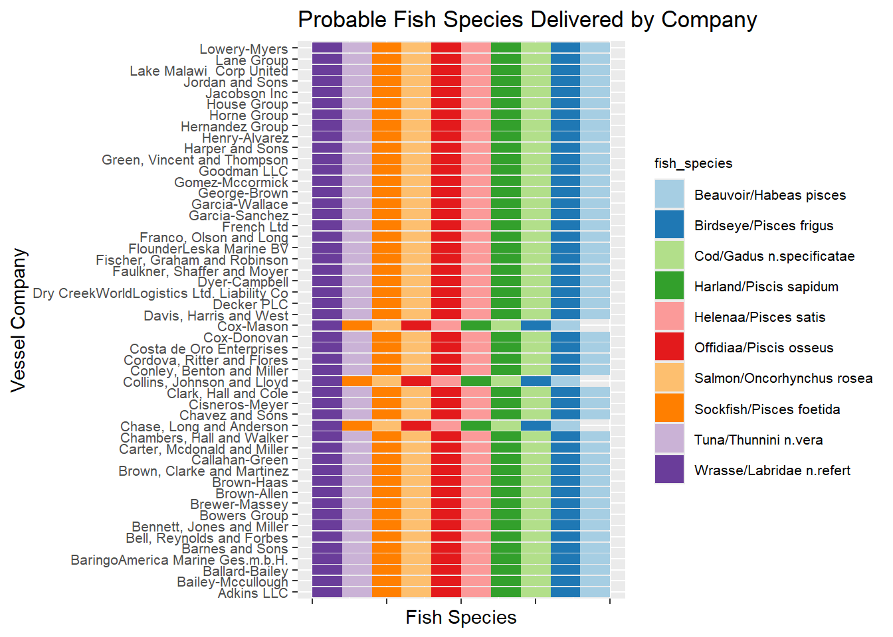
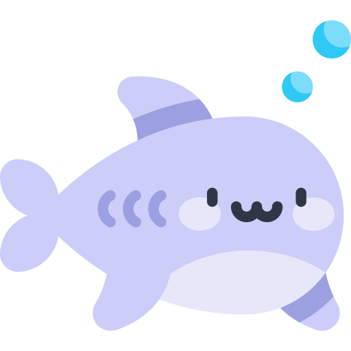
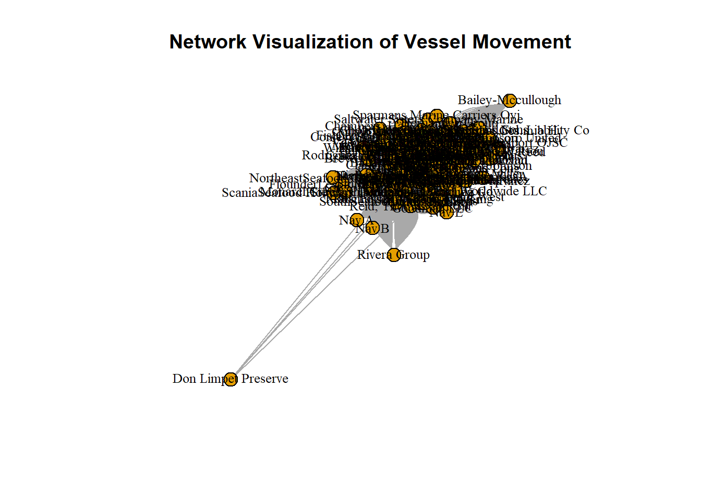
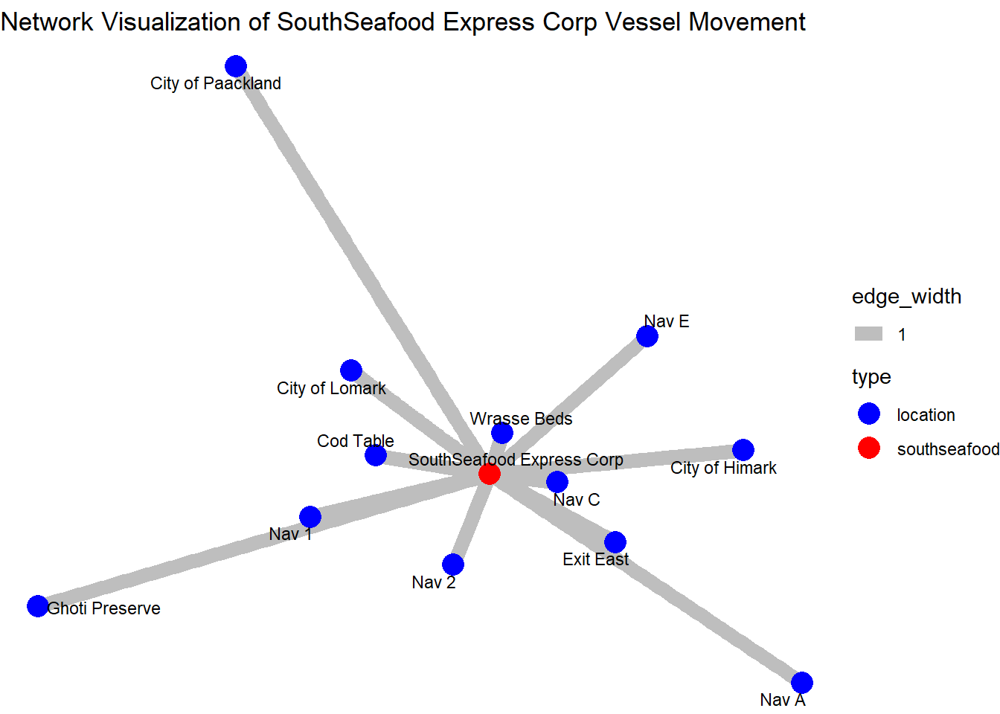
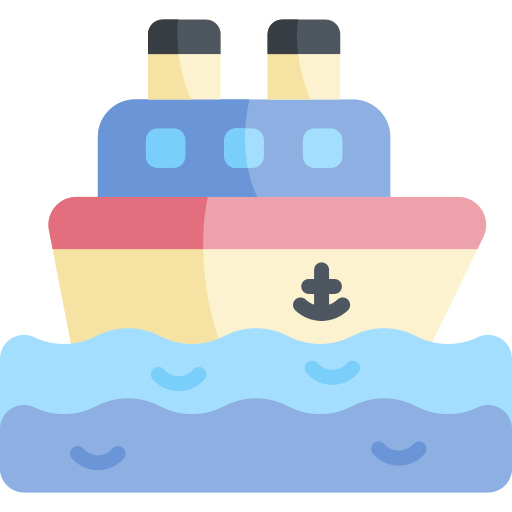
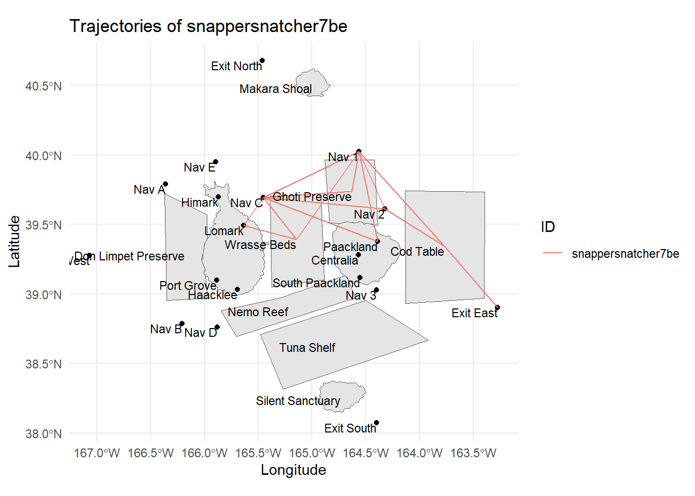
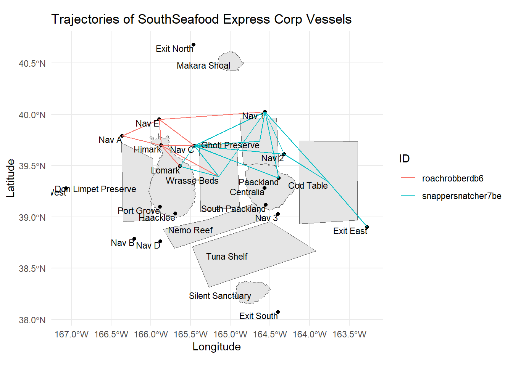

Code
pacman::p_load(jsonlite,tidyverse,igraph,ggraph,RColorBrewer,sf) source: Dribble.com
source: Dribble.com
Vast Challenge also known as IEEE Visual Analytics Science and Technology (VAST) Challenge is Visual Analytics competition which aims to promote innovation in the field of data transformation and interactive visualization. Vast Challenge 2024 is based on the theme of detecting bias, illegal fishing behavior and temporal patterns in fishing industry in Oceanus, an island nation.
This exercise will be based on Mini-Challenge 2: MC2 of Vast Challenge 2024. The objective of the exercise is to help FishEye, a non-profit organization to detect and prevent illegal fishing behaviour, by performing geographic and temporal visual analysis. This exercise will aim to answer the following questions from MC2 of Vast Challenge through visual analytics:
Question 1:
Develop visualizations that illustrate the inappropriate behavior of SouthSeafood Express Corp vessels. FishEye analysts have long wanted to better understand the flow of commercially caught fish through Oceanus’s many ports. But as they were loading data into CatchNet, they discovered they had purchased the wrong port records. They wanted to get the ship off-load records, but they instead got the port-exit records (essentially trucks/trains leaving the port area). Port exit records do not include which vessel that delivered the products. Given this limitation, develop a visualization system to associate vessels with their probable cargos. Which vessels deliver which products and when? What are the seasonal trends and anomalies in the port exit records?.
Question 2:
 Develop visualizations that illustrate the inappropriate behavior of SouthSeafood Express Corp vessels. How do their movement and catch contents compare to other fishing vessels? When and where did SouthSeafood Express Corp vessels perform their illegal fishing? How many different types of suspicious behaviors are observed? Use visual evidence to justify your conclusions.
The code chunk below uses p_load() function from pacman package to check if packages listed are already installed in the computer. The packages are loaded if they are found to be installed. If they are not installed, the function will proceed to install and load them into R environment.
pacman::p_load(jsonlite,tidyverse,igraph,ggraph,RColorBrewer,sf)Below code import MC2 data using fromJSON command from jsonlite package.
mc2_data <- fromJSON("data/MC2/mc2.json")Below code process and clean Edges data.
# Load edges data to mc2_edges
mc2_edges <- as_tibble(mc2_data$links) %>%
distinct()
# Correcting date data type using lubridate package
mc2_edges$time <- as_datetime(mc2_edges$time)
mc2_edges$"_last_edited_date" <- as_datetime(mc2_edges$"_last_edited_date")
mc2_edges$"_date_added" <- as_datetime(mc2_edges$"_date_added")
mc2_edges$date <- as.POSIXct(mc2_edges$date, format = "%Y-%m-%d")
# Updating field names
mc2_edges <- mc2_edges %>%
rename("last_edited_by" = "_last_edited_by",
"date_added" = "_date_added",
"last_edited_date" = "_last_edited_date",
"raw_source" = "_raw_source",
"algorithm" = "_algorithm")
# Divide different events into different table
E_TransponderPing <- subset(mc2_edges, mc2_edges$type == "Event.TransportEvent.TransponderPing")
E_HarborRpt <- subset(mc2_edges, mc2_edges$type == "Event.HarborReport")
E_Tx <- subset(mc2_edges, mc2_edges$type == "Event.Transaction")
# save mc2_edges into R rds file format
write_rds(mc2_edges, "data/rds/mc2_edges.rds")Take a look at mc2_edges to ensure data is processed correctly.
glimpse(mc2_edges)Rows: 271,643
Columns: 17
$ type <chr> "Event.TransportEvent.TransponderPing", "Event.Tra…
$ time <dttm> 2035-09-16 04:06:48, 2035-09-20 05:21:33, 2035-09…
$ dwell <dbl> 115074.79, 412706.32, 286092.88, 327623.95, 243225…
$ last_edited_by <chr> "Olokun Daramola", "Melinda Manning", "Olokun Dara…
$ date_added <dttm> 2035-09-16 00:59:46, 2035-09-22 02:37:37, 2035-09…
$ last_edited_date <dttm> 2035-09-16 00:59:46, 2035-09-22 02:37:37, 2035-10…
$ raw_source <chr> "Oceanus Vessel Locator System", "Oceanus Vessel L…
$ algorithm <chr> "OVLS-Catch&Hook", "OVLS-Catch&Hook", "OVLS-Catch&…
$ source <chr> "City of Haacklee", "City of Haacklee", "City of H…
$ target <chr> "perchplundererbc0", "perchplundererbc0", "perchpl…
$ key <int> 0, 1, 2, 3, 4, 5, 6, 7, 8, 0, 1, 2, 3, 4, 5, 6, 7,…
$ date <dttm> NA, NA, NA, NA, NA, NA, NA, NA, NA, NA, NA, NA, N…
$ data_author <chr> NA, NA, NA, NA, NA, NA, NA, NA, NA, NA, NA, NA, NA…
$ aphorism <chr> NA, NA, NA, NA, NA, NA, NA, NA, NA, NA, NA, NA, NA…
$ holiday_greeting <chr> NA, NA, NA, NA, NA, NA, NA, NA, NA, NA, NA, NA, NA…
$ wisdom <chr> NA, NA, NA, NA, NA, NA, NA, NA, NA, NA, NA, NA, NA…
$ `saying of the sea` <chr> NA, NA, NA, NA, NA, NA, NA, NA, NA, NA, NA, NA, NA…Below code process and clean Nodes data.
# Load nodes data to mc2_nodes
mc2_nodes <- as_tibble(mc2_data$nodes) %>%
distinct()
# Correcting date data type using lubridate package
mc2_nodes$"_last_edited_date" <- as_datetime(mc2_nodes$"_last_edited_date")
mc2_nodes$"_date_added" <- as_datetime(mc2_nodes$"_date_added")
mc2_nodes$date <- as.POSIXct(mc2_nodes$date, format = "%Y-%m-%d")
# Updating field names
mc2_nodes <- mc2_nodes %>%
rename("last_edited_by" = "_last_edited_by",
"date_added" = "_date_added",
"last_edited_date" = "_last_edited_date",
"raw_source" = "_raw_source",
"algorithm" = "_algorithm")
mc2_nodes <- mc2_nodes %>%
mutate(Activities = gsub("c[(]", "", Activities)) %>%
mutate(Activities = gsub("\"", "", Activities)) %>%
mutate(Activities = gsub("[)]", "", Activities))
mc2_nodes <- mc2_nodes %>%
mutate(fish_species_present = gsub("c[(]", "", fish_species_present)) %>%
mutate(fish_species_present = gsub("\"", "", fish_species_present)) %>%
mutate(fish_species_present = gsub("[)]", "", fish_species_present))
# Divide different nodes into different table
N_fish <- subset(mc2_nodes, mc2_nodes$type == "Entity.Commodity.Fish") %>%
select_if(~ !any(is.na(.))) %>%
select(-c(`type`, `raw_source`, `algorithm`, `Activities`, `fish_species_present`)) %>%
rename(fish_species = name,
fish_id = id)
NL_City <- subset(mc2_nodes, mc2_nodes$type == "Entity.Location.City") %>%
select_if(~ !any(is.na(.))) %>%
select(-c(`raw_source`, `algorithm`, `type`, `fish_species_present`)) %>%
rename(city_name = Name,
city_id = id)
NL_Point <- subset(mc2_nodes, mc2_nodes$type == "Entity.Location.Point") %>%
select_if(~ !any(is.na(.))) %>%
select(-c(`raw_source`, `algorithm`, `kind`, `fish_species_present`)) %>%
rename(point_name = Name,
point_id = id)
# Need to tidy NL Region
NL_Region <- subset(mc2_nodes, mc2_nodes$type == "Entity.Location.Region") %>%
select_if(~ !any(is.na(.))) %>%
select(-c(`raw_source`, `algorithm`, `type`, `Description`)) %>%
rename(region_name = Name,
region_id = id,
region_kind = kind)
N_Delivery_doc <- subset(mc2_nodes, mc2_nodes$type == "Entity.Document.DeliveryReport") %>%
select_if(~ !any(is.na(.))) %>%
rename(deliver_date = date,
cargo_id = id) %>%
select(-c(`algorithm`, `type`, `raw_source`, `Activities`, `fish_species_present`))
N_vessel <- mc2_nodes %>%
filter(grepl("Entity.Vessel", type)) %>%
mutate(vessel_type = case_when(
grepl("FishingVessel", type, ignore.case = TRUE) ~ "Fishing",
grepl("Ferry.Passenger", type, ignore.case = TRUE) ~ "Ferry_Passenger",
grepl("Ferry.Cargo", type, ignore.case = TRUE) ~ "Ferry_Cargo",
grepl("Research", type, ignore.case = TRUE) ~ "Research",
grepl("Other", type, ignore.case = TRUE) ~ "Other",
grepl("Tour", type, ignore.case = TRUE) ~ "Tour",
grepl("CargoVessel", type, ignore.case = TRUE) ~ "Cargo_Vessel"
)) %>%
select(-c(`algorithm`, `type`, `raw_source`, `Activities`, `fish_species_present`)) %>%
mutate(company = ifelse(is.na(company), "Unknown", company)) %>% # Handle NA values by replacing NA with unknown
rename(vessel_id = id,
vessel_name = Name,
vessel_company = company) %>%
select_if(~ !any(is.na(.)))
# save mc2_nodes into R rds file format
write_rds(mc2_nodes, "data/rds/mc2_nodes.rds")Take a look at mc2_nodes to ensure data is processed correctly.
glimpse(mc2_nodes)Rows: 5,637
Columns: 20
$ type <chr> "Entity.Commodity.Fish", "Entity.Commodity.Fish",…
$ last_edited_by <chr> "Clepper Jessen", "Clepper Jessen", "Haenyeo Hyun…
$ date_added <dttm> 2033-09-04, 2034-01-21, 2033-06-22, 2033-11-24, …
$ last_edited_date <dttm> 2035-01-25, 2035-01-04, 2035-01-14, 2035-01-14, …
$ raw_source <chr> "", "", "", "", "", "", "", "", "", "", "Oceanus:…
$ algorithm <chr> "", "", "", "", "", "", "", "", "", "", "", "", "…
$ name <chr> "Cod/Gadus n.specificatae", "Birdseye/Pisces frig…
$ id <chr> "gadusnspecificatae4ba", "piscesfrigus900", "pisc…
$ Name <chr> NA, NA, NA, NA, NA, NA, NA, NA, NA, NA, "Haacklee…
$ Description <chr> NA, NA, NA, NA, NA, NA, NA, NA, NA, NA, NA, NA, N…
$ Activities <chr> "NULL", "NULL", "NULL", "NULL", "NULL", "NULL", "…
$ kind <chr> NA, NA, NA, NA, NA, NA, NA, NA, NA, NA, "city", "…
$ qty_tons <dbl> NA, NA, NA, NA, NA, NA, NA, NA, NA, NA, NA, NA, N…
$ date <dttm> NA, NA, NA, NA, NA, NA, NA, NA, NA, NA, NA, NA, …
$ flag_country <chr> NA, NA, NA, NA, NA, NA, NA, NA, NA, NA, NA, NA, N…
$ company <chr> NA, NA, NA, NA, NA, NA, NA, NA, NA, NA, NA, NA, N…
$ tonnage <int> NA, NA, NA, NA, NA, NA, NA, NA, NA, NA, NA, NA, N…
$ length_overall <int> NA, NA, NA, NA, NA, NA, NA, NA, NA, NA, NA, NA, N…
$ style <chr> NA, NA, NA, NA, NA, NA, NA, NA, NA, NA, NA, NA, N…
$ fish_species_present <chr> "NULL", "NULL", "NULL", "NULL", "NULL", "NULL", "…# Rename target column as vessel_id
E_TransponderPing <- E_TransponderPing %>%
rename(vessel_id = target)
# Join data tables to include vessel_type, vessel_company in transponder ping data and filter only Fishing vessel type
E_Tping_Fishing <- E_TransponderPing %>%
left_join(N_vessel %>% select(vessel_id, vessel_type, vessel_company), by = "vessel_id") %>%
filter(vessel_type == "Fishing")Code chunk below uses st_read() of sf package to import Oceanus Geography and Oceanus Locations geographical file in geojson format into R.
# import into R
OceanusGeography = st_read("data/MC2/OceanusGeography.geojson") %>%
st_transform(crs = 4326)Reading layer `OceanusGeography' from data source
`C:\tmyatnoe\ISSS608-VAA\Take-home_Ex\Take-home_Ex03\data\MC2\OceanusGeography.geojson'
using driver `GeoJSON'
Simple feature collection with 29 features and 7 fields
Geometry type: GEOMETRY
Dimension: XY
Bounding box: xmin: -167.0654 ymin: 38.07452 xmax: -163.2723 ymax: 40.67775
Geodetic CRS: WGS 84#save OceanusGeography into rds format for future use
write_rds(OceanusGeography, "data/rds/OceanusGeography.rds")
# import into R
OceanusLocations <- st_read(dsn = "data/shp",
layer = "Oceanus Geography")Reading layer `Oceanus Geography' from data source
`C:\tmyatnoe\ISSS608-VAA\Take-home_Ex\Take-home_Ex03\data\shp'
using driver `ESRI Shapefile'
Simple feature collection with 27 features and 7 fields
Geometry type: POINT
Dimension: XY
Bounding box: xmin: -167.0654 ymin: 38.07452 xmax: -163.2723 ymax: 40.67775
Geodetic CRS: WGS 84#save OceanusGeography into rds format for future use
write_rds(OceanusLocations, "data/rds/OceanusLocations.rds")First, we need to associate Cargo in delivery doc to fish species info using Transaction and Fish Nodes data.
# Extract Cargo to Fish data from Transaction Event data
Cargo_to_Fish <- E_Tx %>%
filter(target %in% N_fish$fish_id) %>% select(source, target)
# Match Cargo Id in delivery doc to fish Id from Transaction data
N_Delivery_doc <- N_Delivery_doc %>%
left_join(Cargo_to_Fish, by = c("cargo_id" = "source"))
# Match Fish Id in delivery doc to fish species from Fish Nodes
N_Delivery_doc <- N_Delivery_doc %>%
left_join(N_fish %>% select("fish_id", "fish_species"), by = c("target" = "fish_id"))
# Rename Target Column in N_Delivery_doc to Fish Id
N_Delivery_doc <- N_Delivery_doc %>%
rename(fish_id = target)Next, extract date only from time column of transponder data.
# Extract Date only from time column of Transponder Ping data
E_Tping_Fishing <- E_Tping_Fishing %>%
mutate(date_only = as.Date(time))Connect possible cargo to vessels using date as connection.
# Merge the datasets based on the date
Tping_to_Delivery <- E_Tping_Fishing %>%
filter(source %in% NL_City$city_id) %>%
left_join(N_Delivery_doc %>% select("deliver_date","cargo_id", "qty_tons", "fish_id", "fish_species"), by = c("date_only" = "deliver_date"))Visualize which company possibly delivers which fish species.
# Remove duplicate rows based on vessel_company and fish_species
distinct_species <- Tping_to_Delivery %>%
distinct(vessel_company, fish_species) %>% na.omit() %>% select(vessel_company, fish_species)
# Filter to show only the first 50 companies alphabetically
companies1 <- distinct_species %>%
distinct(vessel_company) %>%
arrange(vessel_company) %>%
head(50) %>%
pull(vessel_company)
# Filter the main dataframe to include only these companies
companies1_data <- distinct_species %>%
filter(vessel_company %in% companies1)
# Creating stacked bar chart
p1 <- ggplot(companies1_data, aes(x = vessel_company, fill = fish_species)) +
geom_bar(position = "stack") +
labs(title = "Probable Fish Species Delivered by Company",
x = "Vessel Company",
y = "Fish Species") +
theme(axis.text.x = element_blank(),
axis.text.y = element_text(size = 8),
legend.text = element_text(size = 8),
legend.title = element_text(size = 8)) +
scale_fill_discrete(name = "Fish Species") +
scale_fill_brewer(palette = "Dark2") +
coord_flip() +
scale_fill_brewer(palette = "Paired")
# Get all company names excluding the first 50 alphabetically
companies2 <- distinct_species %>%
distinct(vessel_company) %>%
arrange(vessel_company) %>%
slice(51:n()) %>%
pull(vessel_company)
# Filter the main dataframe to include only these companies
companies2_data <- distinct_species %>%
filter(vessel_company %in% companies2)
# Creating stacked bar chart
p2 <- ggplot(companies2_data, aes(x = vessel_company, fill = fish_species)) +
geom_bar(position = "stack") +
labs(title = "Probable Fish Species Delivered by Company",
x = "Vessel Company",
y = "Fish Species") +
theme(axis.text.x = element_blank(),
axis.text.y = element_text(size = 8),
legend.text = element_text(size = 8),
legend.title = element_text(size = 8)) +
scale_fill_discrete(name = "Fish Species") +
coord_flip() +
scale_fill_brewer(palette = "Paired")
p2
p1
 Observation: It is observed that SouthSeafood Express Corp’s catch content has fewer types of fish species comparing to rest of the companies which catch at least 8-9 species. SouthSeafood Express Corp’s catch content shows 5 species of fish namely: Wrasse, Sockfish, Harland, Cod and Beauvoir. It is abnormal that SouthSeafood Express Corp is the only company with lowest number of fish species in the catch content while other companies catch at least 8-9 species. This observation calls for further deep dive in catch content and delivery document of SouthSeafood Express Corp since low catch content may indicate under-declaring the actual catch from fishing to officials.
# Convert deliver_date to a date format and extract year-month
N_Delivery_doc <- N_Delivery_doc %>%
mutate(year_month = floor_date(deliver_date, "month"))
# Aggregate data by year-month
monthly_data <- N_Delivery_doc %>%
group_by(year_month) %>%
summarise(total_qty_tons = sum(qty_tons))
# Extract the month from the 'date' column
monthly_data$month <- format(monthly_data$year_month, "%B")
# Plot the data
ggplot(monthly_data, aes(x = year_month, y = total_qty_tons)) +
geom_bar(stat = "identity", fill = "plum4") +
labs(title = "Total Quantity of Fish Fished per Month",
x = "Month",
y = "Total Quantity (tons)") +
theme(axis.text.x = element_text(angle = 90, hjust = 1))+
scale_x_continuous(breaks = monthly_data$year_month) 
Transponder ping data can provide the locations the vessels from shipping company has been to and give insight whether vessels have visited non-fishing areas. In this section, we will focus only on fishing vessels to understand fishing activities.
Zoom into SouthSeafood Express Corp’s vessel movement to uncover any suspicious behavior.

# Filter SouthSeafood Express Corp Vessels Only
E_Tping_Fishing_SS <- E_Tping_Fishing %>%
filter(vessel_company == "SouthSeafood Express Corp")
edges_ss <- data.frame(
from = E_Tping_Fishing_SS$vessel_company,
to = E_Tping_Fishing_SS$source
)
# Creating graph object
graph_ss <- graph_from_data_frame(edges_ss, directed = FALSE)
# Distinguish between SouthSeafood and location
V(graph_ss)$type <- ifelse(V(graph_ss)$name == "SouthSeafood Express Corp", "southseafood",
ifelse(V(graph_ss)$name %in% E_Tping_Fishing_SS$vessel_id, "boat", "location"))
# Plot the network with ggraph
ggraph(graph_ss, layout = 'fr') +
geom_edge_link(aes(width = 1), edge_colour = "grey") +
geom_node_point(aes(color = type), size = 5) +
geom_node_text(aes(label = name), repel = TRUE, size = 3, color = "black") +
scale_color_manual(values = c("boat" = "orange", "location" = "plum", "southseafood" = "maroon3")) +
theme_void() +
labs(title = "Network Visualization of SouthSeafood Express Corp Vessel Movement")  Observation: One anomaly noted here is that SouthSeafood Express Corp Vessels visited Ghoti Preserve which is not a fishing ground but ecological reserve.
Creating vessel movement data table based in transponder ping and adding corresponding co-oridinates to data for further visualisation.
# Create vessel movement data table
vessel_movement_data <- E_TransponderPing %>%
select(time, dwell, source, vessel_id)
# Tidy source column
vessel_movement_data <- vessel_movement_data%>%
mutate(source = gsub("^City of", "", source)) %>%
mutate(source = gsub("^\\s+", "", source))
# Add X, Y coordinates to vessel movement data table
coords <- st_coordinates(OceanusLocations)
OceanusLocations_df <- OceanusLocations %>%
st_drop_geometry()
OceanusLocations_df$XCOORD <- coords[, "X"]
OceanusLocations_df$YCOORD <- coords[, "Y"]
OceanusLocations_df <- OceanusLocations_df %>%
select(Name, X.Kind, XCOORD, YCOORD) %>%
rename(Loc_Type = X.Kind)
vessel_movement_data <- vessel_movement_data %>%
left_join(OceanusLocations_df,
by = c("source" = "Name"))
# save data as rds format
write_rds(vessel_movement_data, "data/rds/vessel_movement_data.rds")Below code is used to create Vessel Trajectory Data.
vessel_movement_sf <- vessel_movement_data %>%
st_as_sf(coords = c("XCOORD", "YCOORD"),
crs = 4326)
vessel_movement_sf <- vessel_movement_sf %>%
arrange(vessel_id, time)
vessel_trajectory <- vessel_movement_sf %>%
group_by(vessel_id) %>%
summarize(do_union = FALSE) %>%
st_cast("LINESTRING")Below visualization shows Geo-Temporal Patterns of the SouthSeafood Express Corp Vessels.


### snappersnatcher7be
vessel_trajectory_selected1 <- vessel_trajectory %>%
filter(vessel_id == "snappersnatcher7be")
ggplot() +
geom_sf(data = OceanusGeography) +
geom_sf(data = vessel_trajectory_selected1,
aes(color = factor(vessel_id)),
size = 1) +
geom_text(data = OceanusLocations_df,
aes(x = XCOORD, y = YCOORD, label = Name),
size = 3, hjust = 1, vjust = 1) +
theme_minimal() +
labs(title = "Trajectories of snappersnatcher7be",
x = "Longitude", y = "Latitude", color = "ID")
### roachrobberdb6
vessel_trajectory_selected2 <- vessel_trajectory %>%
filter(vessel_id == "roachrobberdb6")
ggplot() +
geom_sf(data = OceanusGeography) +
geom_sf(data = vessel_trajectory_selected2,
aes(color = factor(vessel_id)),
size = 1) +
geom_text(data = OceanusLocations_df,
aes(x = XCOORD, y = YCOORD, label = Name),
size = 3, hjust = 1, vjust = 1) +
theme_minimal() +
labs(title = "Trajectories of snappersnatcher7be",
x = "Longitude", y = "Latitude", color = "ID")